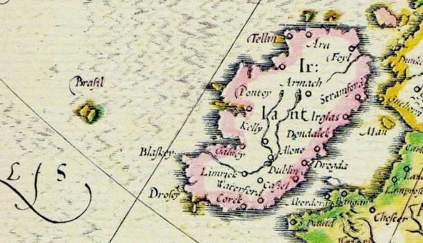
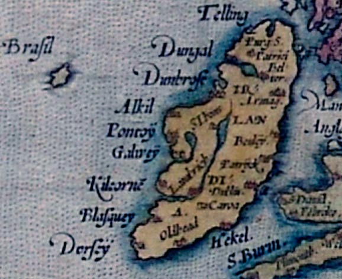
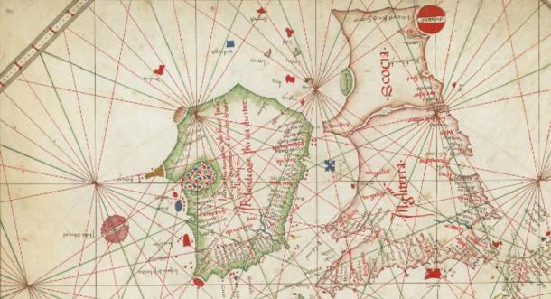
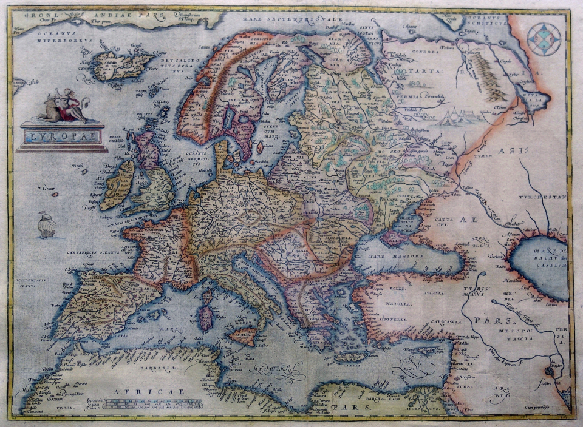
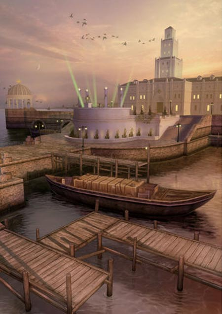

The Legendary Phantom Island of Hy-Brasil
Hy-Brasil
 Hy-Brasil is a mysterious island appearing on maps from 1325 to the 1800s. In Irish myth, it was said to be clouded in mist except for one day every seven years, when it became visible but still could not be reached. Stories about the island have circulated throughout Europe for centuries, with tales that it was the promised land of saints or a paradise where an advanced civilization lived.
On most maps, the island was located roughly 321 km (200 miles) off the west coast of Ireland in the North Atlantic Ocean. One of the most distinctive geographical features of Hy-Brasil on those maps is that it often appears as a circle with a channel (or river) running east to west across it.
The Many Names of the Mysterious Island
Hy-Brasil (also called Hy-Breasal, Hy-Brazil, Hy-Breasil, and Brazir) is derived from the name Breasal meaning the High King of the world in Celtic history . It was noted on maps as early as 1325 by the Genoese cartographer Angelino Dulcert, where it was identified as “Bracile.” It later appeared in the Catalan Atlas in 1375, which placed it as two separate islands with the same name, “Illa de brasil”.
In 1436, it showed up as “Sola De Brasil” in the Venetian map by cartographer Andrea Bianco. Attached to one of the larger islands of a group in the Atlantic, this was identified for a time with Mater Island. It would show up again in 1595 on the Ortelius Map of Europe and Europa Mercator Map and occasionally show up in slightly different locations on different maps over time.
Expeditions in Search of Hy-Brasil
In 1480, John Jay Jr. departed from Bristol, England on a journey to find the fabled island only to come back empty handed after spending two months at sea. In 1481, two more ships, the Trinity and the George, departed from Bristol on an expedition to find Hy-Brasil with no success either.
Interestingly, in 1497, Spanish diplomat Pedro de Ayala reported to the Catholic Monarchs of Spain, that John Cabot (the first European to visit North America since the Vikings) had “discovered in the past by the men from Bristol who found Brasil.” This implied someone from one of the Bristol expeditions had actually managed to find it
Nearly two centuries later Scottish sea captain, John Nisbet, claimed to have spotted Hy-Brasil on his voyage from France to Ireland in 1674. He is said to have sent a party of four ashore, where the sailors spent the entire day on the island.
Large Black Rabbits and a Mysterious Magician
There, they claim to have met a wise old man who provided them with gold and silver. Strangely, the captain said the island was inhabited by large black rabbits and a mysterious magician who lived in a large stone castle by himself. A follow up expedition was led by captain Alexander Johnson who also claimed to have found Hy-Brasil, confirming Nisbet’s findings.
In the following years, Hy-Brasil would retreat into anonymity. As attempts to find it failed again, map-makers started leaving it off most nautical charts . When it was last observed on a map in 1865, it was simply noted as “Brazil rock.”
The last documented sighting of Hy-Brasil was made in 1872 by Robert O’Flaherty and T.J. Westropp. Westropp claimed to have visited the island on three previous occasions and was so captivated by it that he brought his family with him to see it in person. There, they all witnessed it appear out of nowhere only to see it vanish again before their very eyes.
Nearly two centuries later Scottish sea captain, John Nisbet, claimed to have spotted Hy-Brasil on his voyage from France to Ireland in 1674. He is said to have sent a party of four ashore, where the sailors spent the entire day on the island.
Myths and Legends About Hy-Brasil
There are many myths and legends surrounding Hy-Brasil. In some of them, the island is the home of the gods of Irish lore . In others, it is inhabited by priests or monks rumored to hold ancient knowledge which allowed them to create an advanced civilization. Some think that St. Brendan's famous voyage to find the “Promised Land” may have been Hy-Brasil.
In one famous UFO encounter , known as the Rendlesham Forest incident, a strange craft is reported to have landed outside a U.S. military base in the U.K. Sergeant Jim Penniston claims to have touched this craft and telepathically receive 16 pages of binary code into his mind. He wrote down the code the next day and had it translated decades later. The code was said to list very specific coordinates of Hy-Brasil and listed the location where ancient cartographers had it mapped. The message also listed the coordinates of several other ancient sites around the world such as the Pyramids at Giza and Nazca Lines . At the very bottom of the message, coordinates of Hy-Brasil were listed again along with an origin year of 8100.”
The last documented sighting of Hy-Brasil was made in 1872 by Robert O’Flaherty and T.J. Westropp. Westropp claimed to have visited the island on three previous occasions and was so captivated by it that he brought his family with him to see it in person. There, they all witnessed it appear out of nowhere only to see it vanish again before their very eyes.
Nearly two centuries later Scottish sea captain, John Nisbet, claimed to have spotted Hy-Brasil on his voyage from France to Ireland in 1674. He is said to have sent a party of four ashore, where the sailors spent the entire day on the island.